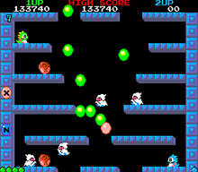

Bubble Bobble is a 2D platform game developed by Taito and released on June 16, 1986. In the gameplay, players need to control the character to move on a 2D map, avoid and attack the enemy by pressing attack key and jump key. When the enemy on the map is cleaned up, the player will automatically enter the next level. The gameplay is interesting to me, and the attack method fits the name of the game; when the player presses the attack key, a bubble will be shot out, and the enemy touched by the bubble will be wrapped and brought by the bubbles; when the player attacks the enemy again, the enemy will fall on the ground and become fruits. Players can get fruits to earn score rewards.

I think that there are two advantages of the game: the first, random bonus items will appear on the map during the game. Every time a bonus item appears, it means that players can earn a higher score in the same level, and the number of scores is one of the important sources of the game that allows players to have positive feedback, so I think this design is interesting and necessary, at the same time, some randomness is added to the game. Second, in each level, if there is only one enemy rested on the map, it will become a state of anger in just several seconds, and the enemy's movement speed and response speed are twice as fast as before. This mechanism makes enemy have more changes; I also noticed that the enemy did not immediately become a state of anger, it may be because the fast speed of response will cause difficulty for players to react, which may reduce the game experience.
Of course, Bubble Bobble also has some things that I think are not good enough. First it the control feeling. When I control the character to move left and right and jump up to the upper platform, I think there is no problem with the control, but when I want to jump back to the down platform, I must find a gap and land to the down platform through the gap. I personally don't like this. I know that many games have such designs, like Mario, but the level design of Bubble Bobble is different from Mario: Mario allows players to walk freely within a certain range; the map of each level is closed, the moveable range is much smaller than Mario's, and the number of Bubble Bobble's enemies of each level has more than three. Players need a more flexible way of controlling; players cannot go the down platform directly which limit the control is negative feedback for me.
In general, I still like the design of this game. I want to try the new vision of Bubble Bobble on Switch platform if I have a chance; I want to see what new game mechanisms and visual effects can be brought to the old game through new technologies.